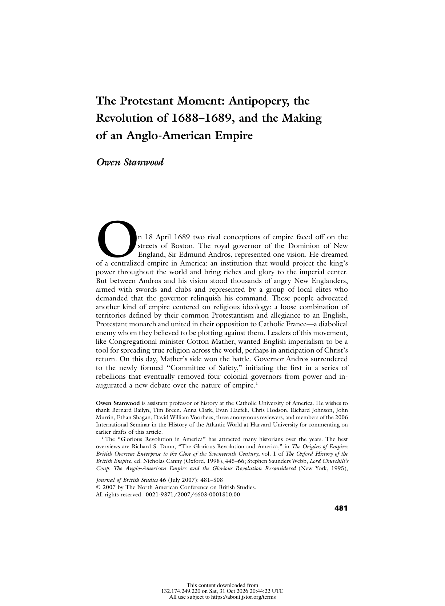
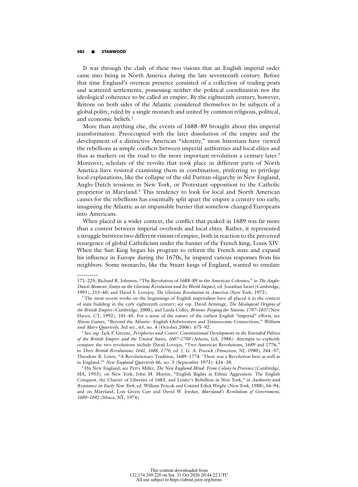

<!DOCTYPE html>
<html lang="en">
<head>
  <meta charset="UTF-8">
  <meta name="viewport" content="width=device-width, initial-scale=1.0">
  <meta name="description" content="The Protestant Moment: Antipopery, the Revolution of 1688–1689, and the Making of an Anglo-American Empire. Scholarly Article A4.259 for Unit 1: A Not-So-New World.">
  <meta name="theme-color" content="#1E3A5F">
  <title>Scholarly Article A4.259 | The Protestant Moment: Antipopery, the Revolution of 1688–1689, and the Making of an Anglo-American Empire</title>
  <link rel="canonical" href="https://www.thegarzaarchive.org/APUSH/Unit_1/Sources/Scholarly_Articles/A4.259_Protestant_Moment_Antipopery_Revolution_1688.html">
  <link rel="preconnect" href="https://fonts.googleapis.com">
  <link rel="preconnect" href="https://fonts.gstatic.com" crossorigin>
  <link href="https://fonts.googleapis.com/css2?family=Cinzel:wght@500;600;700&amp;family=Cormorant+Garamond:ital,wght@0,500;0,600;0,700;1,500;1,600&amp;family=Inter:wght@500;600;700;800&amp;display=swap" rel="stylesheet">
  <style>
    :root {
      --forest: #1E3A5F;
      --forest-mid: #6C7A89;
      --coral: #C5A009;
      --coral-light: #F5F1E6;
      --cream: #FFFFFF;
      --paper: #FFFFFF;
      --mint: #FDFCFA;
      --sage: #DADEE2;
      --ink: #102034;
      --muted: #4A5A6E;
      --shadow: 0 22px 55px rgba(18, 35, 57, .14);
      --heading: 'Cinzel', Georgia, serif;
      --body: 'Cormorant Garamond', Georgia, serif;
      --ui: Inter, Arial, sans-serif;
      --coral-text: #667381;
    }

    * { box-sizing: border-box; }
    html { scroll-behavior: smooth; }
    body {
      margin: 0;
      min-width: 320px;
      background: var(--cream);
      color: var(--ink);
      font-family: var(--body);
      font-size: 19px;
      line-height: 1.65;
    }
    body::before {
      content: '';
      position: fixed;
      inset: 0;
      z-index: -1;
      background:
        radial-gradient(circle at 94% 4%, rgba(197, 160, 9, .12), transparent 25rem),
        linear-gradient(145deg, rgba(255,255,255,.55), transparent 48%);
      pointer-events: none;
    }
    a { color: inherit; }
    :focus-visible { outline: 3px solid var(--coral-light); outline-offset: 3px; }
    .skip-link {
      position: fixed;
      top: -5rem;
      left: 1rem;
      z-index: 1000;
      padding: .65rem 1rem;
      background: var(--paper);
      color: var(--forest);
      font: 700 .75rem var(--ui);
    }
    .skip-link:focus { top: 1rem; }

    .archive-bar {
      position: sticky;
      top: 0;
      z-index: 100;
      color: var(--paper);
      background: rgba(30, 58, 95, .98);
      border-bottom: 4px solid var(--coral);
      box-shadow: 0 4px 18px rgba(18, 35, 57, .18);
    }
    .archive-bar__inner {
      width: min(1120px, calc(100% - 2rem));
      min-height: 64px;
      margin: 0 auto;
      display: flex;
      align-items: center;
      justify-content: space-between;
      gap: 1.5rem;
    }
    .archive-link {
      display: inline-flex;
      align-items: center;
      gap: .7rem;
      color: var(--paper);
      font: 700 .72rem var(--ui);
      letter-spacing: .12em;
      text-decoration: none;
      text-transform: uppercase;
    }
    .archive-link span { color: var(--coral-light); font-size: 1.1rem; }
    .archive-link:hover { color: var(--coral-light); }
    .archive-meta {
      color: var(--sage);
      font: 700 .68rem var(--ui);
      letter-spacing: .12em;
      text-transform: uppercase;
    }
    .reading-progress {
      position: absolute;
      left: 0;
      bottom: -4px;
      width: 0;
      height: 4px;
      background: var(--coral-light);
      transform-origin: left center;
    }

    .document-shell {
      position: relative;
      width: min(940px, calc(100% - 2rem));
      margin: clamp(1.5rem, 4vw, 3.5rem) auto 4rem;
      overflow: hidden;
      background: var(--paper);
      border: 1px solid var(--sage);
      border-top: 7px solid var(--coral);
      box-shadow: var(--shadow);
    }
    .document-shell::before {
      content: attr(data-code);
      position: absolute;
      top: 2rem;
      right: 1.5rem;
      color: rgba(108, 122, 137, .055);
      font: 700 clamp(5rem, 15vw, 10rem)/.8 var(--heading);
      pointer-events: none;
    }
    .legacy-source {
      width: 100% !important;
      max-width: none !important;
      margin: 0 !important;
      background: transparent !important;
      border-collapse: collapse;
    }
    .source-content {
      position: relative;
      padding: clamp(2.25rem, 7vw, 5rem) !important;
    }
    .source-kicker {
      position: relative;
      margin: 0 0 1rem !important;
      color: var(--coral-text) !important;
      font: 800 .7rem var(--ui) !important;
      letter-spacing: .18em !important;
    }
    .source-title {
      position: relative;
      max-width: 760px;
      margin: 0 0 1rem !important;
      color: var(--forest) !important;
      font: 600 clamp(2.35rem, 6vw, 4.45rem)/1.04 var(--heading) !important;
      letter-spacing: -.025em;
      text-wrap: balance;
    }
    .source-byline {
      position: relative;
      max-width: 720px;
      margin: 0 0 2.1rem !important;
      color: var(--forest-mid) !important;
      font: 600 clamp(1rem, 2vw, 1.15rem)/1.55 var(--body) !important;
      font-style: italic !important;
    }
    .title-rule {
      margin: 0 0 2rem !important;
    }
    .title-rule td { border-top: 1px solid var(--coral) !important; }

    .context-grid {
      margin: 0 0 3rem !important;
      overflow: hidden;
      background: var(--mint) !important;
      border: 1px solid var(--sage);
      border-left: 5px solid var(--coral);
    }
    .context-grid td:first-child {
      width: 23% !important;
      padding: 1rem 1rem .75rem 1.2rem !important;
      color: var(--coral-text) !important;
      font: 800 .65rem var(--ui) !important;
      letter-spacing: .14em !important;
    }
    .context-grid td:last-child {
      padding: 1rem 1.25rem .75rem .75rem !important;
      color: var(--ink) !important;
      font: 600 .86rem/1.65 var(--ui) !important;
    }
    .context-grid tr + tr td { border-top: 1px solid var(--sage); }

    .section-heading {
      display: block !important;
      width: fit-content;
      margin: 3.6rem 0 1.4rem !important;
      padding: .45rem 0 .55rem !important;
      color: var(--forest) !important;
      border-top: 4px solid var(--coral);
      border-bottom: 1px solid var(--sage) !important;
      font: 700 clamp(1rem, 2vw, 1.25rem) var(--heading) !important;
      letter-spacing: .04em;
    }
    .section-spacer { height: 0 !important; }
    .citation-label {
      max-width: 67ch;
      margin: 1.3rem auto .4rem !important;
      color: var(--coral-text) !important;
      font: 800 .7rem var(--ui) !important;
      letter-spacing: .08em;
      text-transform: uppercase;
    }
    .document-subheading {
      max-width: 67ch;
      margin: 1.8rem auto .65rem !important;
      color: var(--forest-mid) !important;
      font: 700 .84rem/1.5 var(--ui) !important;
      letter-spacing: .035em;
    }
    .legacy-source p {
      max-width: 67ch;
      margin: 0 auto 1.05em !important;
      color: var(--ink) !important;
      font: 500 clamp(1.08rem, 1.8vw, 1.22rem)/1.78 var(--body) !important;
    }
    .legacy-source p a {
      color: var(--forest-mid) !important;
      text-decoration-color: var(--coral-light) !important;
      text-underline-offset: .18em;
      word-break: break-word !important;
    }
    .legacy-source p a:hover { color: var(--coral-text) !important; }

    .editorial-note {
      max-width: 67ch;
      margin: 1.4rem auto 2.5rem !important;
      background: var(--mint) !important;
      border: 1px solid var(--sage);
    }
    .editorial-note td {
      padding: 1rem 1.2rem !important;
      color: var(--forest-mid) !important;
      border-left: 4px solid var(--coral) !important;
      font: 600 .79rem/1.65 var(--ui) !important;
    }
    .source-media {
      max-width: 67ch;
      margin: 1.25rem auto 2.5rem !important;
      background: var(--mint) !important;
      border: 1px solid var(--sage);
    }
    .source-media td { padding: 1rem !important; }
    .source-media img {
      display: block;
      width: auto !important;
      max-width: 100% !important;
      height: auto !important;
      margin: 0 auto;
    }
    .source-media td[style*="font-family"] {
      color: var(--muted) !important;
      font: 600 .72rem/1.55 var(--ui) !important;
    }
    .source-footer { padding: 0 clamp(2.25rem, 7vw, 5rem) 2rem !important; }
    .source-imprint { margin-top: 1rem !important; }
    .source-imprint td {
      padding-top: 1rem !important;
      color: var(--muted) !important;
      border-top: 1px solid var(--sage) !important;
      font: 700 .63rem var(--ui) !important;
      letter-spacing: .12em !important;
    }
    .document-actions {
      width: min(940px, calc(100% - 2rem));
      margin: -2rem auto 4rem;
      display: flex;
      justify-content: center;
    }
    .document-actions a {
      display: inline-flex;
      align-items: center;
      gap: .65rem;
      padding: .8rem 1.1rem;
      color: var(--forest);
      border: 1px solid var(--sage);
      background: var(--paper);
      font: 800 .68rem var(--ui);
      letter-spacing: .12em;
      text-decoration: none;
      text-transform: uppercase;
    }
    .document-actions a:hover { border-color: var(--coral); color: var(--coral-text); }

    @media (max-width: 680px) {
      .archive-bar__inner { min-height: 58px; }
      .archive-meta { display: none; }
      .document-shell { width: calc(100% - 1rem); margin-top: .75rem; }
      .source-content { padding: 2rem 1.25rem !important; }
      .document-shell::before { top: 1.2rem; right: .35rem; }
      .source-title { font-size: clamp(2rem, 10vw, 2.85rem) !important; }
      .context-grid tr, .context-grid td { display: block; width: 100% !important; }
      .context-grid td:first-child { padding-bottom: .25rem !important; }
      .context-grid td:last-child { padding: 0 1.2rem 1rem !important; }
      .context-grid tr + tr td:last-child { border-top: 0; }
      .source-footer { padding: 0 1.25rem 1.5rem !important; }
      .document-actions { margin-top: -2.4rem; }
    }

    @media print {
      @page { margin: .65in; }
      body { background: #fff; font-size: 11pt; }
      body::before, .archive-bar, .skip-link, .document-actions, .document-shell::before { display: none !important; }
      .document-shell { width: 100%; margin: 0; border: 0; box-shadow: none; }
      .source-content { padding: 0 !important; }
      .legacy-source p { max-width: none; font-size: 11pt !important; line-height: 1.5 !important; }
      .context-grid, .editorial-note { break-inside: avoid; }
      .source-footer { padding: 1rem 0 0 !important; }
    }

    @media (prefers-reduced-motion: reduce) {
      html { scroll-behavior: auto; }
    }

  
    .source-table { max-width: 67ch; margin: 0 auto 1.05em; border-collapse: collapse; font: 500 1.1rem/1.6 var(--body); color: var(--ink); }
    .source-table td { padding: .2rem .9rem .2rem 0; border-bottom: 1px dotted var(--sage); }
    .source-table td:last-child { text-align: right; }
    .legacy-source blockquote {
      max-width: 62ch; margin: 0 auto 1.2em !important; padding: .9rem 1.2rem;
      background: var(--mint); border-left: 4px solid var(--coral);
    }
    .legacy-source blockquote p { max-width: none; margin: 0 0 .6em !important; }
    .legacy-source blockquote p:last-child { margin-bottom: 0 !important; }
    .page-text { max-width: 67ch; margin: -1rem auto 2.2rem; border: 1px solid var(--sage); background: var(--paper); }
    .page-text summary { cursor: pointer; padding: .7rem 1rem; color: var(--forest-mid); font: 700 .72rem var(--ui); letter-spacing: .06em; text-transform: uppercase; }
    .page-text[open] summary { border-bottom: 1px solid var(--sage); }
    .page-text p { margin: .9rem 1.1rem !important; font: 500 1rem/1.6 var(--body) !important; white-space: pre-line; }
    .legacy-source sup { font: 700 .68em var(--ui); line-height: 0; }
  </style>
</head>
<body id="top">
  <a class="skip-link" href="#document">Skip to document</a>
  <nav class="archive-bar" aria-label="Scholarly Article navigation">
    <div class="archive-bar__inner">
      <a class="archive-link" href="https://www.thegarzaarchive.org/APUSH/Unit_1/Sources/Scholarly_Articles/"><span aria-hidden="true">←</span> Scholarly Article Archive</a>
      <div class="archive-meta">Unit 1 · Chapter 4 · A4.259</div>
    </div>
    <div class="reading-progress" id="reading-progress" aria-hidden="true"></div>
  </nav>
  <main class="document-shell" id="document" data-code="A4.259">
    <article aria-labelledby="source-title">
<table role="presentation" width="100%" cellpadding="0" cellspacing="0" border="0" style="background-color:#FFFFFF; max-width:820px; margin:0 auto;" class="legacy-source">
  <tr><td style="padding:32px 36px 20px 36px;" class="source-content">
<div style="font-family:Arial, Helvetica, sans-serif; color:#667381; font-size:13px; font-weight:700; letter-spacing:0.5px; text-transform:uppercase; margin-bottom:8px;" class="source-kicker">Scholarly Article A4.259</div>
<div style="font-family:Georgia, 'Times New Roman', serif; color:#1E3A5F; font-size:30px; font-weight:700; line-height:1.2; margin-bottom:8px;" class="source-title" id="source-title" role="heading" aria-level="1">The Protestant Moment: Antipopery, the Revolution of 1688–1689, and the Making of an Anglo-American Empire</div>
<div style="font-family:Arial, Helvetica, sans-serif; color:#667381; font-size:14px; font-weight:700; line-height:1.5; margin-bottom:16px;" class="source-byline">Owen Stanwood</div>
<table role="presentation" width="100%" cellpadding="0" cellspacing="0" border="0" style="margin-bottom:20px;" class="title-rule"><tr><td style="border-top:4px solid #C5A009; font-size:1px; line-height:1px;">&nbsp;</td></tr></table>
<table role="presentation" width="100%" cellpadding="0" cellspacing="0" border="0" style="background-color:#F5F1E6; border-collapse:collapse; margin-bottom:26px;" class="context-grid">
  <tr>
    <td valign="top" style="width:22%; padding:12px 12px 8px 14px; font-family:Arial, Helvetica, sans-serif; color:#1E3A5F; font-size:12px; font-weight:700; letter-spacing:1px; text-transform:uppercase;">ARTICLE</td>
    <td valign="top" style="padding:12px 14px 8px 12px; font-family:Arial, Helvetica, sans-serif; color:#1E3A5F; font-size:13.5px; line-height:1.55;">The Protestant Moment: Antipopery, the Revolution of 1688–1689, and the Making of an Anglo-American Empire</td>
  </tr>
  <tr>
    <td valign="top" style="width:22%; padding:8px 12px 8px 14px; font-family:Arial, Helvetica, sans-serif; color:#1E3A5F; font-size:12px; font-weight:700; letter-spacing:1px; text-transform:uppercase;">JOURNAL</td>
    <td valign="top" style="padding:8px 14px 8px 12px; font-family:Arial, Helvetica, sans-serif; color:#1E3A5F; font-size:13.5px; line-height:1.55;">Journal of British Studies 46, no. 3 (2007)</td>
  </tr>
  <tr>
    <td valign="top" style="width:22%; padding:8px 12px 8px 14px; font-family:Arial, Helvetica, sans-serif; color:#1E3A5F; font-size:12px; font-weight:700; letter-spacing:1px; text-transform:uppercase;">EXCERPT</td>
    <td valign="top" style="padding:8px 14px 8px 12px; font-family:Arial, Helvetica, sans-serif; color:#1E3A5F; font-size:13.5px; line-height:1.55;">Original journal pages 481-482</td>
  </tr>
  <tr>
    <td valign="top" style="width:22%; padding:8px 12px 12px 14px; font-family:Arial, Helvetica, sans-serif; color:#1E3A5F; font-size:12px; font-weight:700; letter-spacing:1px; text-transform:uppercase;">JSTOR</td>
    <td valign="top" style="padding:8px 14px 12px 12px; font-family:Arial, Helvetica, sans-serif; color:#1E3A5F; font-size:13.5px; line-height:1.55;"><a href="https://www.jstor.org/stable/10.1086/515441">https://www.jstor.org/stable/10.1086/515441</a></td>
  </tr>
</table>
<div style="display:inline-block; font-family:Arial, Helvetica, sans-serif; color:#667381; font-size:17px; font-weight:700; border-bottom:2px solid #C5A009; padding-bottom:4px; margin:6px 0 14px 0;" class="section-heading" role="heading" aria-level="2">Selection Overview</div>
<p style="font-family:Georgia, 'Times New Roman', serif; color:#1E3A5F; font-size:15px; line-height:1.7; margin:0 0 14px 0; ">Stanwood opens with Boston, 18 April 1689, where two conceptions of empire faced off: Governor Andros's centralized empire, and a Protestant empire of territories united by allegiance to an English, Protestant monarch and opposition to Catholic France. He argues that the colonial rebellions of 1689 should be seen as part of a global struggle between Protestantism and popery, and calls on historians to take that view of the Glorious Revolution.</p>
<div style="display:inline-block; font-family:Arial, Helvetica, sans-serif; color:#667381; font-size:17px; font-weight:700; border-bottom:2px solid #C5A009; padding-bottom:4px; margin:6px 0 14px 0;" class="section-heading" role="heading" aria-level="2">Excerpt Format</div>
<p style="font-family:Georgia, 'Times New Roman', serif; color:#1E3A5F; font-size:15px; line-height:1.7; margin:0 0 14px 0; ">The next two pages are exact facsimiles from the supplied article PDF. Original pagination and the author’s note system are preserved.</p>
<div style="display:inline-block; font-family:Arial, Helvetica, sans-serif; color:#667381; font-size:17px; font-weight:700; border-bottom:2px solid #C5A009; padding-bottom:4px; margin:6px 0 14px 0;" class="section-heading" role="heading" aria-level="2">Facsimile Excerpt</div>
<table role="presentation" width="100%" cellpadding="0" cellspacing="0" border="0" style="margin:6px 0 24px 0;" class="source-media"><tr>
  <td style="text-align:center; padding:14px; background-color:#FFFFFF; border:1px solid #F5F1E6;">
    
    <div style="font-family:Arial, Helvetica, sans-serif; color:#1E3A5F; font-size:12.5px; line-height:1.55; margin-top:10px; text-align:left;">Original journal page 481.</div>
  </td>
</tr></table>
<details class="page-text"><summary>Text of this page (original journal page 481)</summary>
<p>481
Journal of British Studies 46 (July 2007): 481–508
 2007 by The North American Conference on British Studies.
All rights reserved. 0021-9371/2007/4603-0001$10.00
The Protestant Moment: Antipopery, the
Revolution of 1688–1689, and the Making
of an Anglo-American Empire
Owen Stanwood
O
n 18 April 1689 two rival conceptions of empire faced off on the
streets of Boston. The royal governor of the Dominion of New
England, Sir Edmund Andros, represented one vision. He dreamed
of a centralized empire in America: an institution that would project the king’s
power throughout the world and bring riches and glory to the imperial center.
But between Andros and his vision stood thousands of angry New Englanders,
armed with swords and clubs and represented by a group of local elites who
demanded that the governor relinquish his command. These people advocated
another kind of empire centered on religious ideology: a loose combination of
territories defined by their common Protestantism and allegiance to an English,
Protestant monarch and united in their opposition to Catholic France—a diabolical
enemy whom they believed to be plotting against them. Leaders of this movement,
like Congregational minister Cotton Mather, wanted English imperialism to be a
tool for spreading true religion across the world, perhaps in anticipation of Christ’s
return. On this day, Mather’s side won the battle. Governor Andros surrendered
to the newly formed “Committee of Safety,” initiating the first in a series of
rebellions that eventually removed four colonial governors from power and in-
augurated a new debate over the nature of empire.1
Owen Stanwood is assistant professor of history at the Catholic University of America. He wishes to
thank Bernard Bailyn, Tim Breen, Anna Clark, Evan Haefeli, Chris Hodson, Richard Johnson, John
Murrin, Ethan Shagan, David William Voorhees, three anonymous reviewers, and members of the 2006
International Seminar in the History of the Atlantic World at Harvard University for commenting on
earlier drafts of this article.
1 The “Glorious Revolution in America” has attracted many historians over the years. The best
overviews are Richard S. Dunn, “The Glorious Revolution and America,” in The Origins of Empire:
British Overseas Enterprise to the Close of the Seventeenth Century, vol. 1 of The Oxford History of the
British Empire, ed. Nicholas Canny (Oxford, 1998), 445–66; Stephen Saunders Webb, Lord Churchill’s
Coup: The Anglo-American Empire and the Glorious Revolution Reconsidered (New York, 1995),
This content downloaded from 
132.174.249.220 on Sat, 31 Oct 2026 20:44:22 UTC 
All use subject to https://about.jstor.org/terms</p></details>
<table role="presentation" width="100%" cellpadding="0" cellspacing="0" border="0" style="margin:6px 0 24px 0;" class="source-media"><tr>
  <td style="text-align:center; padding:14px; background-color:#FFFFFF; border:1px solid #F5F1E6;">
    
    <div style="font-family:Arial, Helvetica, sans-serif; color:#1E3A5F; font-size:12.5px; line-height:1.55; margin-top:10px; text-align:left;">Original journal page 482.</div>
  </td>
</tr></table>
<details class="page-text"><summary>Text of this page (original journal page 482)</summary>
<p>482

STANWOOD
It was through the clash of these two visions that an English imperial order
came into being in North America during the late seventeenth century. Before
that time England’s overseas presence consisted of a collection of trading posts
and scattered settlements, possessing neither the political coordination nor the
ideological coherence to be called an empire. By the eighteenth century, however,
Britons on both sides of the Atlantic considered themselves to be subjects of a
global polity, ruled by a single monarch and united by common religious, political,
and economic beliefs.2
More than anything else, the events of 1688–89 brought about this imperial
transformation. Preoccupied with the later dissolution of the empire and the
development of a distinctive American “identity,” most historians have viewed
the rebellions as simple conflicts between imperial authorities and local elites and
thus as markers on the road to the more important revolution a century later.3
Moreover, scholars of the revolts that took place in different parts of North
America have resisted examining them in combination, preferring to privilege
local explanations, like the collapse of the old Puritan oligarchy in New England,
Anglo-Dutch tensions in New York, or Protestant opposition to the Catholic
proprietor in Maryland.4 This tendency to look for local and North American
causes for the rebellions has essentially split apart the empire a century too early,
imagining the Atlantic as an impassable barrier that somehow changed Europeans
into Americans.
When placed in a wider context, the conflict that peaked in 1689 was far more
than a contest between imperial overlords and local elites. Rather, it represented
a struggle between two different visions of empire, both in reaction to the perceived
resurgence of global Catholicism under the banner of the French king, Louis XIV.
When the Sun King began his program to reform the French state and expand
his influence in Europe during the 1670s, he inspired various responses from his
neighbors. Some monarchs, like the Stuart kings of England, wanted to emulate
171–225; Richard R. Johnson, “The Revolution of 1688–89 in the American Colonies,” in The Anglo-
Dutch Moment: Essays on the Glorious Revolution and Its World Impact, ed. Jonathan Israel (Cambridge,
1991), 215–40; and David S. Lovejoy, The Glorious Revolution in America (New York, 1972).
2 The most recent works on the beginnings of English imperialism have all placed it in the context
of state building in the early eighteenth century; see esp. David Armitage, The Ideological Origins of
the British Empire (Cambridge, 2000); and Linda Colley, Britons: Forging the Nation, 1707–1837 (New
Haven, CT, 1992), 101–45. For a sense of the nature of the earliest English “imperial” efforts, see
Alison Games, “Beyond the Atlantic: English Globetrotters and Transoceanic Connections,” William
and Mary Quarterly, 3rd ser., 63, no. 4 (October 2006): 675–92.
3 See esp. Jack P. Greene, Peripheries and Center: Constitutional Development in the Extended Polities
of the British Empire and the United States, 1607–1788 (Athens, GA, 1986). Attempts to explicitly
compare the two revolutions include David Lovejoy, “Two American Revolutions, 1689 and 1776,”
in Three British Revolutions: 1641, 1688, 1776, ed. J. G. A. Pocock (Princeton, NJ, 1980), 244–57;
Theodore B. Lewis, “A Revolutionary Tradition, 1689–1774: ‘There was a Revolution here as well as
in England,’” New England Quarterly 46, no. 3 (September 1973): 424–38.
4 On New England, see Perry Miller, The New England Mind: From Colony to Province (Cambridge,
MA, 1953); on New York, John M. Murrin, “English Rights as Ethnic Aggression: The English
Conquest, the Charter of Liberties of 1683, and Leisler’s Rebellion in New York,” in Authority and
Resistance in Early New York, ed. William Pencak and Conrad Edick Wright (New York, 1988), 56–94;
and on Maryland, Lois Green Carr and David W. Jordan, Maryland’s Revolution of Government,
1689–1692 (Ithaca, NY, 1974).
This content downloaded from 
132.174.249.220 on Sat, 31 Oct 2026 20:44:22 UTC 
All use subject to https://about.jstor.org/terms</p></details>
<div style="display:inline-block; font-family:Arial, Helvetica, sans-serif; color:#667381; font-size:17px; font-weight:700; border-bottom:2px solid #C5A009; padding-bottom:4px; margin:6px 0 14px 0;" class="section-heading" role="heading" aria-level="2">Chicago Citations</div>
<div style="font-family:Arial, Helvetica, sans-serif; color:#667381; font-size:13px; font-weight:700; margin:4px 0 6px 0;" class="citation-label">Bibliography entry:</div>
<p style="font-family:Georgia, 'Times New Roman', serif; color:#1E3A5F; font-size:15px; line-height:1.7; margin:0 0 14px 0; padding-left:36px; text-indent:-36px;">Stanwood, Owen. “The Protestant Moment: Antipopery, the Revolution of 1688–1689, and the Making of an Anglo-American Empire.” <em>Journal of British Studies</em> 46, no. 3 (2007): 481–508. https://www.jstor.org/stable/10.1086/515441.</p>
<div style="font-family:Arial, Helvetica, sans-serif; color:#667381; font-size:13px; font-weight:700; margin:4px 0 6px 0;" class="citation-label">Footnote citation:</div>
<p style="font-family:Georgia, 'Times New Roman', serif; color:#1E3A5F; font-size:15px; line-height:1.7; margin:0 0 14px 0; ">Owen Stanwood, “The Protestant Moment: Antipopery, the Revolution of 1688–1689, and the Making of an Anglo-American Empire,” <em>Journal of British Studies</em> 46, no. 3 (2007): 481–482, https://www.jstor.org/stable/10.1086/515441.</p>
<div style="font-family:Arial, Helvetica, sans-serif; color:#667381; font-size:13px; font-weight:700; margin:4px 0 6px 0;" class="citation-label">Shortened citation:</div>
<p style="font-family:Georgia, 'Times New Roman', serif; color:#1E3A5F; font-size:15px; line-height:1.7; margin:0 0 14px 0; ">Stanwood, “Protestant Moment,” 481–482.</p>
<div style="display:inline-block; font-family:Arial, Helvetica, sans-serif; color:#667381; font-size:17px; font-weight:700; border-bottom:2px solid #C5A009; padding-bottom:4px; margin:6px 0 14px 0;" class="section-heading" role="heading" aria-level="2">Source Verification</div>
<p style="font-family:Georgia, 'Times New Roman', serif; color:#1E3A5F; font-size:15px; line-height:1.7; margin:0 0 14px 0; ">Supplied PDF pages 2-3 correspond to original journal pages 481-482. The pages were inserted directly from the supplied PDF; no transcription or silent omission was introduced.</p>
  </td></tr>
  <tr><td style="padding:0 36px 22px 36px;" class="source-footer">
<table role="presentation" width="100%" cellpadding="0" cellspacing="0" border="0" style="margin-top:10px;" class="source-imprint"><tr>
  <td style="padding-top:12px; border-top:1px solid #C5A009; font-family:Arial, Helvetica, sans-serif; color:#667381; font-size:11px; letter-spacing:1px; text-transform:uppercase; text-align:center;">UNIT 1 · A NOT-SO-NEW WORLD | HISTORY B17A | DANIEL GARZA, M.A.</td>
</tr></table>
  </td></tr>
</table>

    </article>
  </main>
  <div class="document-actions">
    <a href="https://www.thegarzaarchive.org/APUSH/Unit_1/Sources/Scholarly_Articles/"><span aria-hidden="true">←</span> Return to the Scholarly Article Archive</a>
  </div>
  <script>
    (() => {
      const progress = document.getElementById('reading-progress');
      const updateProgress = () => {
        const scrollable = document.documentElement.scrollHeight - window.innerHeight;
        const percent = scrollable > 0 ? Math.min(100, Math.max(0, window.scrollY / scrollable * 100)) : 0;
        progress.style.width = `${percent}%`;
      };
      updateProgress();
      window.addEventListener('scroll', updateProgress, { passive: true });
      window.addEventListener('resize', updateProgress);
    })();
  </script>
</body>
</html>
